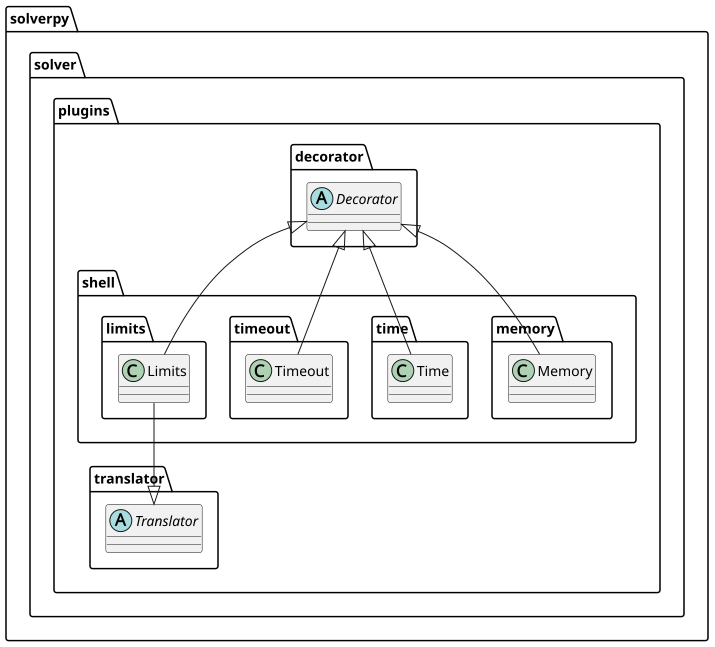

Shell Overview
solverpy.solver.plugins.shell
Shell plugins
Shell plugins control how the solver subprocess is launched: building
resource-limit arguments, wrapping the command with timeout, and
measuring wall-clock time with /usr/bin/env time.

| Plugin | Description |
|---|---|
Limits |
Parses the limit string (e.g. T5-M2048) and appends solver-specific CLI flags; can also prepend limits to the strategy string |
Timeout |
Prepends timeout --kill-after=15 --foreground N to enforce a hard wall-clock cutoff |
Time |
Prepends /usr/bin/env time -p to measure real/user/sys time; populates runtime in the result |
Memory |
Prepends ulimit -Sv N to cap virtual memory before the solver process starts |
Limits
Bases: Decorator, Translator
Parse a resource-limit string and apply solver-specific CLI flags.
Limits can operate as either a
Decorator or a
Translator depending on
the cmdline flag:
cmdline=True(default) — registers as a decorator;decorate()appends the constructed flags to the shell command (e.g.--cpu-limit=10).cmdline=False— registers as a translator;translate()prepends the flags to the strategy string so the solver receives them as part of its options input.
The limit string uses the format T<seconds>[-M<gigabytes>], e.g.:
"T10"— 10-second CPU/wall-clock limit"T10-M4"— 10 seconds and 4 GB memory limit
Each flag letter is mapped to a CLI template via the builder dict provided
by the concrete solver subclass.
Source code in packages/solverpy/src/solverpy/solver/plugins/shell/limits.py
16 17 18 19 20 21 22 23 24 25 26 27 28 29 30 31 32 33 34 35 36 37 38 39 40 41 42 43 44 45 46 47 48 49 50 51 52 53 54 55 56 57 58 59 60 61 62 63 64 65 66 67 68 69 70 71 72 73 74 75 76 77 78 79 80 81 82 83 84 85 86 87 88 89 90 91 92 93 94 95 96 97 98 99 100 101 102 103 104 105 106 107 108 109 110 111 112 113 114 115 116 117 118 119 120 121 122 123 124 125 126 | |
strategy: str
property
The constructed CLI flag string derived from the limit string.
decorate(cmd: str, instance: Any, strategy: Any) -> str
Append limit flags to cmd when cmdline=True (no-op otherwise).
An optional /dev/stdin suffix is appended when inputfile=True so that
solvers that read the problem from stdin receive the correct filename.
Source code in packages/solverpy/src/solverpy/solver/plugins/shell/limits.py
94 95 96 97 98 99 100 101 102 103 104 105 106 107 108 109 110 | |
register(solver: SolverPy) -> None
Register as a decorator or translator depending on cmdline.
Source code in packages/solverpy/src/solverpy/solver/plugins/shell/limits.py
71 72 73 74 75 76 | |
translate(instance: Any, strategy: str) -> tuple[Any, str]
Prepend limit flags to strategy when cmdline=False (no-op otherwise).
Source code in packages/solverpy/src/solverpy/solver/plugins/shell/limits.py
112 113 114 115 116 117 118 119 120 121 | |
Memory
Bases: Decorator
Limit virtual memory using ulimit -Sv before launching the solver.
Prepends ulimit -Sv <kilobytes> && to the shell command. The limit is
set in kilobytes as giga * 1024 * 1024 + 1024 to allow a small overhead
above the nominal gigabyte value.
Note: ulimit -Sv caps virtual memory (VSZ), not resident memory (RSS).
For stricter RSS limits consider a cgroup-based approach instead.
Source code in packages/solverpy/src/solverpy/solver/plugins/shell/memory.py
8 9 10 11 12 13 14 15 16 17 18 19 20 21 22 23 24 25 26 27 28 29 30 31 32 33 34 | |
__init__(giga: float = 4)
Args: giga: Virtual memory limit in gigabytes (default 4 GB).
Source code in packages/solverpy/src/solverpy/solver/plugins/shell/memory.py
19 20 21 22 23 24 | |
decorate(cmd: str, instance: Any, strategy: Any) -> str
Prepend ulimit -Sv <N> && to cmd.
Source code in packages/solverpy/src/solverpy/solver/plugins/shell/memory.py
26 27 28 29 30 31 32 33 34 | |
Time
Bases: Decorator
Measure wall-clock, user, and sys time using Python's stdlib.
Snapshots time.perf_counter() and resource.getrusage(RUSAGE_CHILDREN)
in decorate() (just before the subprocess) and computes deltas in
update() (just after). Three keys are added to the result:
realtime— elapsed wall-clock time (seconds)usertime— user-mode CPU time of child processes (seconds)systime— kernel-mode CPU time of child processes (seconds)runtime—realtime - systime(canonical solve time)
The solver command is not modified, so no timing lines appear in the raw solver output.
Source code in packages/solverpy/src/solverpy/solver/plugins/shell/time.py
11 12 13 14 15 16 17 18 19 20 21 22 23 24 25 26 27 28 29 30 31 32 33 34 35 36 37 38 39 40 41 42 43 44 45 46 47 48 49 50 51 52 53 54 55 56 57 58 59 60 | |
decorate(cmd: str, instance: Any, strategy: Any) -> str
Snapshot start times; return cmd unchanged.
Source code in packages/solverpy/src/solverpy/solver/plugins/shell/time.py
30 31 32 33 34 35 36 37 38 39 40 41 42 | |
update(instance: Any, strategy: Any, output: str, result: Result) -> None
Compute time deltas and populate result.
Source code in packages/solverpy/src/solverpy/solver/plugins/shell/time.py
44 45 46 47 48 49 50 51 52 53 54 55 56 57 58 59 60 | |
Timeout
Bases: Decorator
Enforce a hard wall-clock cutoff using the GNU timeout command.
Prepends timeout --kill-after=15 --foreground <N> to the solver command.
If the solver does not finish within N seconds, timeout sends SIGTERM;
after a further 15 seconds it sends SIGKILL.
This decorator inserts itself at position 0 so it becomes the outermost wrapper — it fires before any other decorator modifies the command.
In update() it sets result["status"] = "TIMEOUT" when the subprocess
exits with code 124 (killed by timeout) or 137 (killed by SIGKILL).
Source code in packages/solverpy/src/solverpy/solver/plugins/shell/timeout.py
11 12 13 14 15 16 17 18 19 20 21 22 23 24 25 26 27 28 29 30 31 32 33 34 35 36 37 38 39 40 41 42 43 44 45 46 47 48 49 50 51 52 53 54 55 56 57 58 59 | |
__init__(timeout: int)
Args: timeout: Wall-clock limit in seconds.
Source code in packages/solverpy/src/solverpy/solver/plugins/shell/timeout.py
25 26 27 28 29 30 31 | |
decorate(cmd: str, instance: Any, strategy: Any) -> str
Prepend the timeout command to cmd.
Source code in packages/solverpy/src/solverpy/solver/plugins/shell/timeout.py
38 39 40 41 42 43 44 45 46 | |
register(solver: SolverPy) -> None
Insert at position 0 of solver.decorators (outermost wrapper).
Source code in packages/solverpy/src/solverpy/solver/plugins/shell/timeout.py
33 34 35 36 | |
update(instance: Any, strategy: Any, output: str, result: Result) -> None
Set status = "TIMEOUT" if the process was killed by the timeout.
Source code in packages/solverpy/src/solverpy/solver/plugins/shell/timeout.py
48 49 50 51 52 53 54 55 56 57 58 59 | |